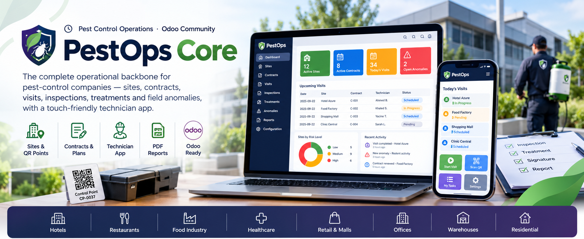
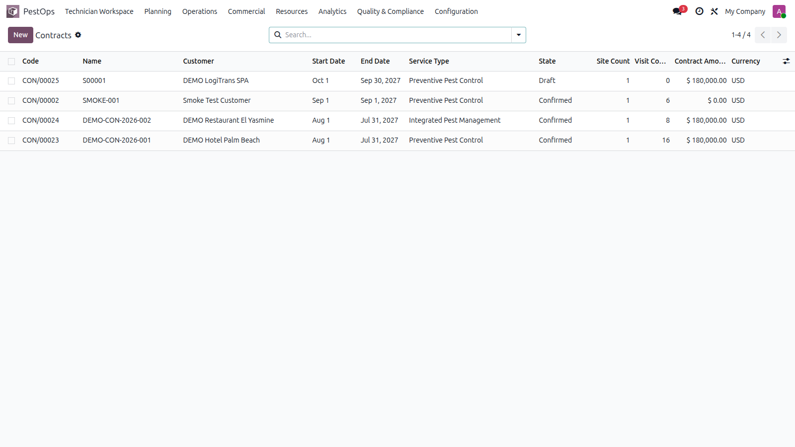
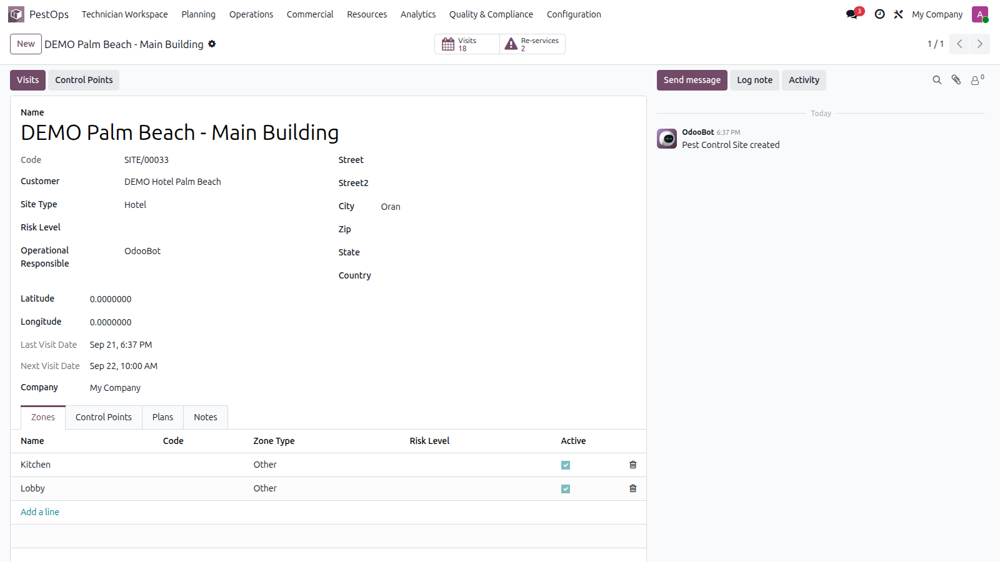
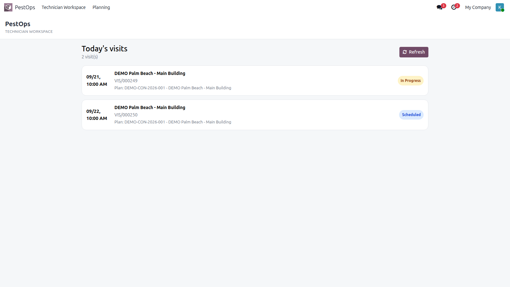
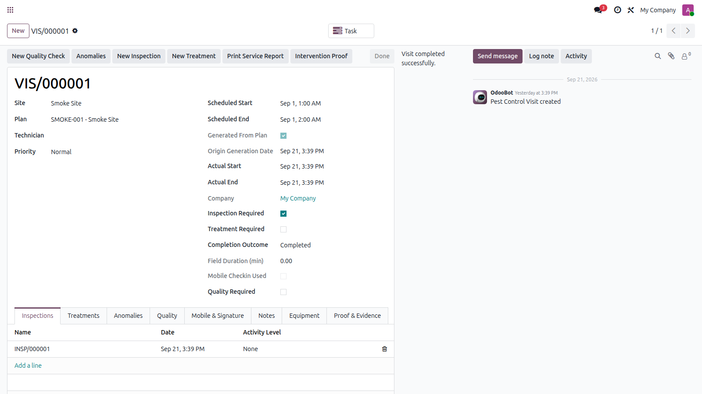
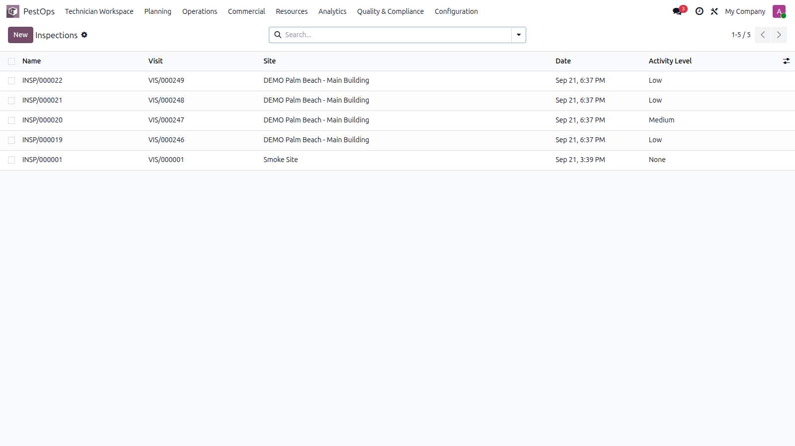

⏱ Pest Control Operations · Odoo Community
🏢 Sites & QR Points 📋 Contracts & Plans 🧑🔧 Technician App 📄 PDF Reports ✅ Odoo Ready


Contracts with live site and visit counters, states and amounts.
PestOps Core works out-of-the-box for any company that sells recurring hygiene and pest-control services.
🏨 Hotels 🍽️ Restaurants 🏭 Food Industry 🏥 Healthcare 🏬 Retail & Malls 🏢 Offices 📦 Warehouses 🏠 Residential
Model every customer location exactly like your technicians see it: sites divided into zones, each equipped with control points (rodent stations, cockroach traps, insect light traps, inspection points). Every point gets a unique QR token with a printable label — scan it on site to jump straight to its history.

Site form with zones, control points, visits and QR tracking.
Create the contract, attach sites with their own frequency, technician and horizon — confirming it builds the treatment plans automatically. A daily cron then generates the recurring visits idempotently (no duplicates, ever), sends reminders, and tracks renewals and expiries.
A touch-friendly Owl app for the field: the technician sees today's visits, starts them, records inspections with photos, logs treatments with products and lots, captures the customer signature, checks in/out with GPS (geofence validated) and keeps working offline with local drafts.

Technician workspace — today's visits with live status badges.
Every visit produces structured field data: inspections with activity levels and evidence (live pest, droppings, damage, nest…), treatments consuming real stock through validated moves, re-services for callbacks and anomalies with severity workflow that can spawn corrective re-services.

Completed visit: action buttons, inspection lines and tabs for treatments, anomalies, quality, signature and proof.

All inspections with activity levels and linked visits.
| Odoo Version | Community |
|---|---|
| License | LGPL-3 |
| Module Type | Standalone Application |
| Dependencies | base, mail, project, stock |
| External Services | None required |
| Frontend Tech | Owl 2 · touch-first technician app |
| Backend Tech | Python 3 · Odoo ORM |
| Demo Data | Included (pests, methods, risk levels) |
Purchase includes full support, bug fixes and updates.
📧 imazighenapps@gmail.com — fast response 🔄 Free Updates 🎭 Demo Data included